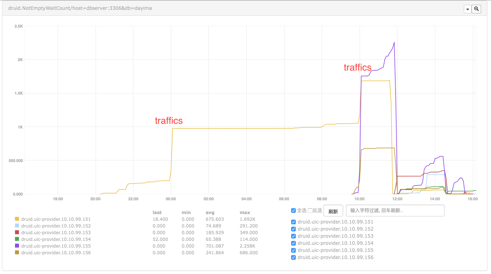
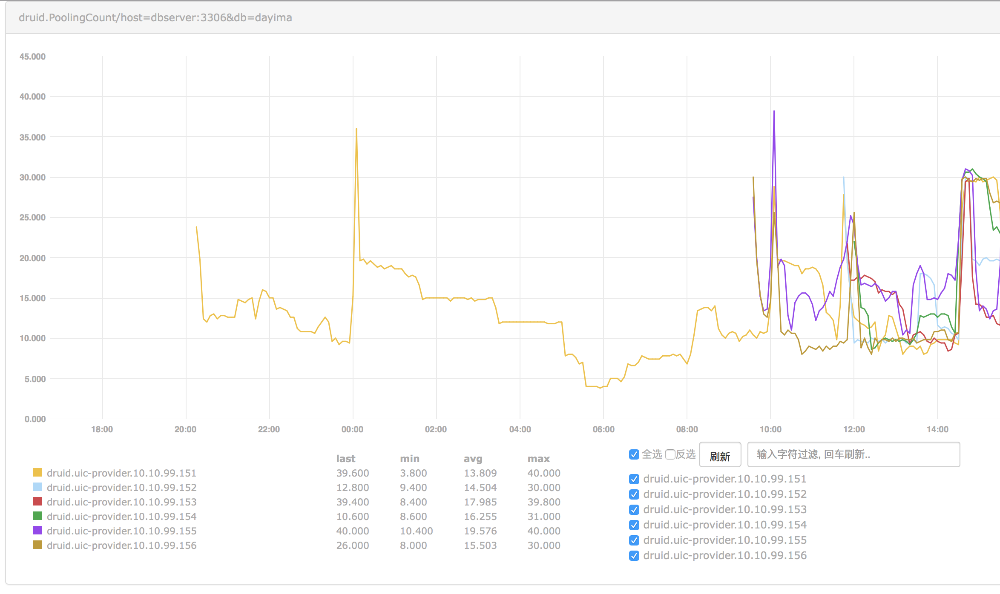
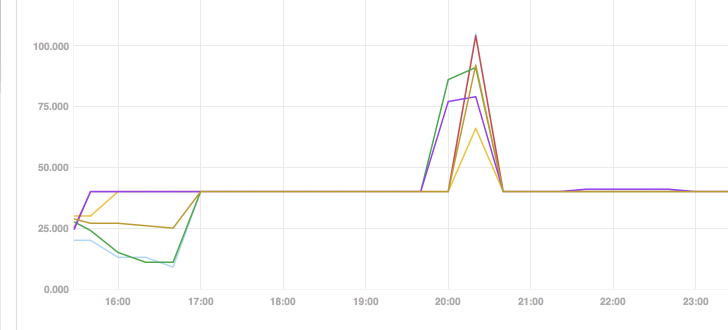
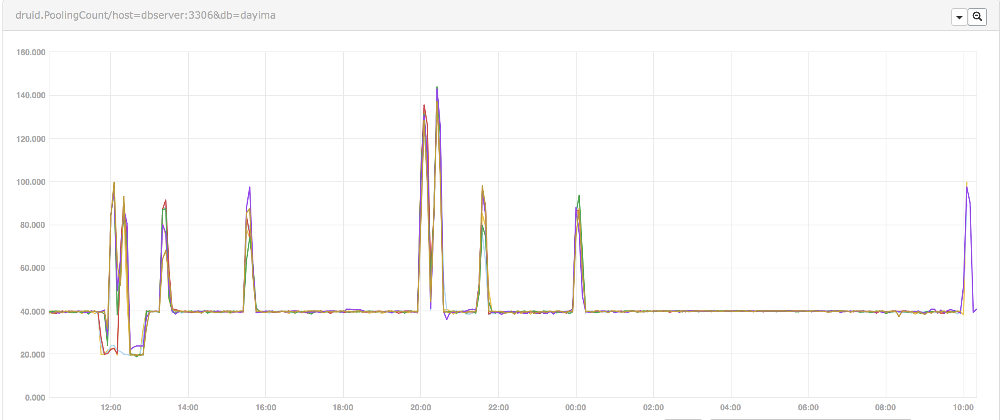
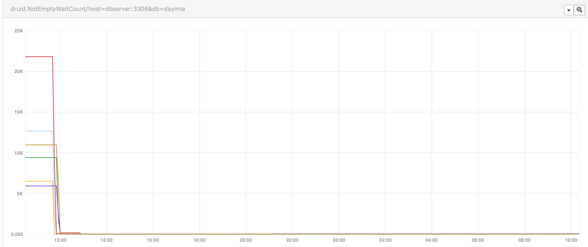

Issue occurred
Recently there is a very strange problem happening every night on about 20:00:05. The SELECTED provider (DUBBO) will reach the capacity of DUBBO thread pool which is limit to 2000 threads and in fixed pool model. Most of them blocked in the position of fetching connections through druid:
- waiting on java.util.concurrent.locks.AbstractQueuedSynchronizer$ConditionObject@63c4ac4b
at java.util.concurrent.locks.LockSupport.parkNanos(LockSupport.java:215)
at java.util.concurrent.locks.AbstractQueuedSynchronizer$ConditionObject.awaitNanos(AbstractQueuedSynchronizer.java:2078)
at com.alibaba.druid.pool.DruidDataSource.pollLast(DruidDataSource.java:1479)
at com.alibaba.druid.pool.DruidDataSource.getConnectionInternal(DruidDataSource.java:1079)
at com.alibaba.druid.pool.DruidDataSource.getConnectionDirect(DruidDataSource.java:946)
at com.alibaba.druid.filter.FilterChainImpl.dataSource_connect(FilterChainImpl.java:4544)
at com.alibaba.druid.filter.stat.StatFilter.dataSource_getConnection(StatFilter.java:661)
at com.alibaba.druid.filter.FilterChainImpl.dataSource_connect(FilterChainImpl.java:4540)
Analysis 1
First we can find that it seems like many threads stuck inside pollLast(). Precisely on notEmpty.awaitNanos(). Maybe it is caused by some forms of dead lock or racing problem. Which is even more strange why we use SELECTED before there is only ONE node suffered this issue while we have 6 nodes all together.
So There maybe some rarely executed invocation or scheduled task causing this problem.
Currently we use the version 1.0.10 while the newest release is 1.1.12. So we can try to upgrade it.
Besides we can introduce more metrics of the Druid Pool to Open Falcon and see whether there are some other reasons.
Next
We will try:
- [x] Support monitoring for projects having druid.
- [x] Upgrade druid from 1.0.10 to 1.1.12.
- [x] Adjust pool's parameters according to the monitor results.
NotEmptyWaitCount
First we found the curve of NotEmptyWaitCount telling that there maybe some problems in the pool at some traffic fluctuation points(Shown below).

We can see when sudden traffic incoming the wait count increased.
PhysicalConnect
And we compared another indicator PhysicalConnect:

We can also be sure when wait count increased some physical connecting actions were really happened.
PoolingCount
After some iteration of pool parameters including increasing minIdle and initialSize we checked the indicator PoolingCount which can indicate the connection count in idle.

We can see the pool can't keep the count of idle connections as we expected(minIdle = initialSize = 20). And it keeps changing after some minutes. So if recycleThread didn't recycle them there must be some other reasons causing them destroyed. And we checked that we enabled testWhileIdle while disabling testOnBorrow and testOnReturn. We thought that idle connections will be checked periodically by setting testWhileIdle but things didn't indicate the same result.
After reading the source code for a while we found there was really a misunderstanding on testWhileIdle.
Pool Parameters Related
initialSize vs. minIdle
initialSize means when pool starts how many connections will be created.
minIdle means when evictThread runs how many connections will prevent to be destroyed.
So generally initialSize may be greater or equals to minIdle.
timeBetweenEvictionRunsMillis vs. minEvictableIdleTimeMillis
minEvictableIdleTimeMillis means how long a connection turns to be useless when in idle. But when it's in minIdle range it will ignore this.
timeBetweenEvictionRunsMillis means the time between recycle thread's loop.
testWhileIdle vs. testWhileIdle
testWhileIdle doesn't mean test occurred while a connection is in idle but when a connection is borrowed and has been in idle more then timeBetweenEvictionRunsMillis the connection test will happen.
That is test when borrowed a long-idle connection. The test will only happen in getConnection as testOnBorrow means which is more efficient.
So if you have some timeout settings on server side you may want to use keepAlive.
keepAlive
keepAlive means when a connection is in idle a connection test will happen on it every timeBetweenEvictionRunsMillis. It enhances the recycleThread.
We can be sure of all idle connections's status using it.

Conclusion 1
Connections in idle pool(Which is calculated as poolCount) is not reliable when you turn off testOnBorrow. And if you have some big fluctuations of load, for example, you will also take time to reconnect with turning on testOnBorrow. That will lead to poor performance when fluctuations occur.
So we can turn on the keepAlive option to really keep alive the connections in idle (minIdle) to get prepared to the fluctuations.
<property name="initialSize" value="40" />
<property name="minIdle" value="40" />
<property name="maxActive" value="1000" />
<property name="maxWait" value="60000" />
<property name="timeBetweenEvictionRunsMillis" value="180000" />
<property name="minEvictableIdleTimeMillis" value="600000" />
<property name="validationQuery" value="SELECT 'x'" />
<property name="testWhileIdle" value="true" />
<property name="testOnBorrow" value="false" />
<property name="testOnReturn" value="false" />
<property name="keepAlive" value="true" />
By the way the problem of NotEmptyWaitCount is solved at the same time.

Result
After making some changes of configuration we continue to check the monitor data.

The peak shows that it indeed need about 100 connections at that time and cost much time to increase from 40 to 100 connections. Thus because, in CreateThread, one by one.
Analysis 2
So we face two different solutions:
- Increase the connection pool from 40 to 100 at least.
- Find a way to increase the count of connections in pool to 100 before the peaks coming.
The first way is simple but it's a waste of connection resources in non-peak time. So we'd like following the other way.
At the end, we create a parametric task to do that which can be change parameter online. Parameter is like 1000=100,1157=100,1958=150,2019=150,2130=100,2357=100. The key is HHmm while the value is filling count of connection pool. So we can warm up the pool before the peak coming.

While the wait count turns to be:

We can see there was nearly no wait count after our warming up action before peaks.
Conclusion 2
For summary the route of solving this problem is:
- Find problem in monitor data of dubbo.
- Go deeper in dubbo's stack dump and
jstackusingcrontab. - Add monitor for druid pool and find out the
NotEmptyWaitCountis increasing all the time. - Find the
minIdledoesn't match the physical connection count (fromnetstat) as expected. AndPoolingCountalso can't keep theminIdlevalue. And more it mainly decreased at 10 minutes point after booted which wasminEvictableIdleTimeMillis. So addkeepAliveto ensure the connection's status.PoolingCountcan be keep tominIdleafter that. - Find
PoolingCountincreasing to 100 when following peak came. We chose using awarm upjob. - Problem is solved finally.
Important
- Monitoring is important. Where your eyes go monitor should follow.
- Warming is important. Especially if you don't want much waste of resources.